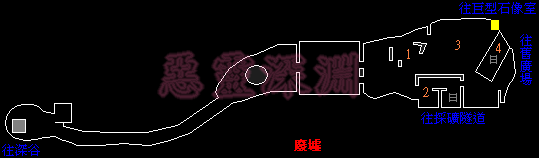
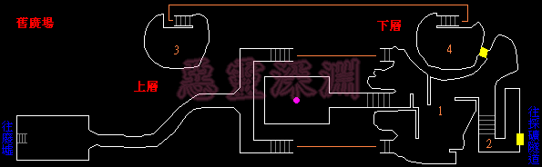
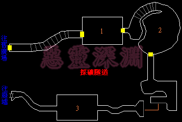

|
惡靈古堡～惡靈古堡４----地圖攻略～4-3
|
|
攻略內容以Normal為主，地圖上的紫色圓點●表示高價寶物的位置 ，標綠色的道具則是過關必須的重要道具。
 來到廢墟，先去找前方在小屋中的武器商人整理整理裝備，門口有一份file Ada的來信。 購物指南（new）：
當某些武器在威力、連射速度、裝填速度、裝彈數目四個部份都已經改造到最高級時，即可選擇升級為限定仕樣。限定仕 樣同時也代表著該武器的極限，無法再改造了。 繼續前進，會碰上幾個村民，而且在編號3的位置有一批村民，可以爬上編號1、編號2的高台用小刀來應戰，或是往編號3的位置丟 顆手榴彈，不想拿道具的玩家可以直衝編號4轉動手把，打開往舊廣場的通道，直接離開。
 從廢墟下來，來到舊廣場上層，到下層之前，可以看到村民駐守，而下面編號1的附近有好幾個捕獸夾，而且道路相當複雜，最好 先不要貿然下去，從上層用手槍射擊駐守的村民，引誘他們到上層來並把他們解決。少了村民的干擾，先去解除捕獸夾吧，這裡有 個高價寶物至高のロッド（至高的權仗）。從剛剛就聽到電鋸的聲音，不過不用太擔心，電鋸男的位置在上層編號3的房間中，而 他不會經由窗戶的爬梯下來，所以只要站在編號2的地方用狙擊槍將他打倒即可；也可以先爬上去一次，引誘他跳下來，然後利用 梯子戰法打倒他。之後，可以選擇從爬梯直接上二樓，或是經由一樓編號4的房間上去，無論是編號3或是編號4的位置都會分別觸 動一批村民出現，而下層房間有一個電鋸男守著，將他引出攻擊；若是直接從爬梯上二樓，支援的村民也會從爬梯上來，而且一旦 Leon使用槍枝，就會驚動一樓的電鋸男上來攻擊。再次利用爬梯來打倒吧！二樓中央有個重要道具封印的鑰匙，用來打開往採礦隧 道的門。若是從二樓的窗戶跳出，則可以到編號2的地方應戰，以免被夾擊。
 採礦隧道編號1的房間有天花板陷阱，而且這次已經無法先行擊破了，觸動機關的同時，會有數隻疫生獸出來干擾，最好先用散彈 槍或是閃光彈打倒疫生獸，然後迅速射擊天花板四個紅點解除機關，房間旁邊的棺木中有大筆金錢。編號2房間天花板上的火炬有 小寶石，從下層擊落即可。 來到搭乘採礦車的地方，只要在第二輛採礦車射擊旁邊的把手，採礦車就會開始前進。建議最好站在最後一輛採礦車上，路途中有 許多村民會跳上來，站在最後面比較好掌控情況也避免被夾擊。在途中採擴車會被村民停下來一次，電鋸男此時也會出現，採擴車 附近有一些彈藥，若是要採礦車繼續前進，就射擊前方偏左的把手。後半段的路程中，還會有另一名電鋸男，盡量避免敵人進入最 後一輛採礦車，跳進來的村民應該優先解決，後半段有兩個需要使用複合按鈕來躲避的狀況，但是如果前方有村民，這兩個狀況剛 好對村民產生傷害。 當採礦車路經一段不停旋轉下降的地方時，要注意隧道已經接近盡頭，到達盡頭時，按照指示按複合按鍵，不然就要跟這輛車一起 掉入深淵之中了。使用按鍵成功爬上陸地後，在編號3的地方拿取重要道具犧牲的紀念碑，從盡頭回到廢墟 。 如果回到武器商人小屋，可以改造紅九手槍。 購物指南（new）：
用犧牲的紀念碑打開往巨型石像室的門，搭上升降梯。本章節結束。
疑難解答
亡，他們死後留下的道具在採礦車經過時可以直接按按鍵回收，所以站在最後一輛採礦車拿到的機率比較高。 未經許可禁止轉載連結 |
||||||||||||||||||||||||||||||||||||||||||||||||||||||||||||||||||||||||||||||||
惡靈深淵Biohazard Abyss http://98.to/coolbio